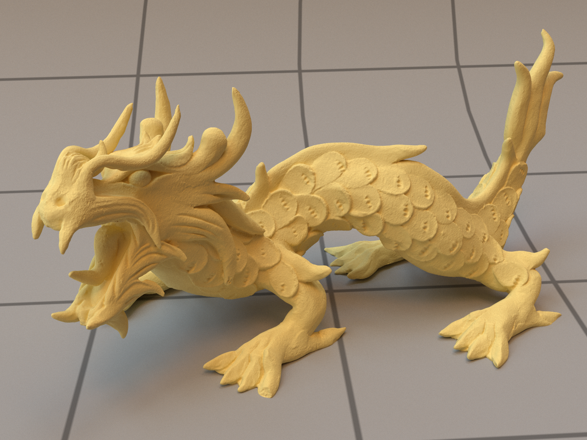

Microfacet BRDF Approximation Employing Linearly Transformed Cosines
 Link to the Github Project: BRDF LTC
Advisor: Fabio Pellacini, Full Professor in Computer Science at Sapienza University of Rome, former research division of Pixar Animation Studios
The BRDF function describes the reflection of light off a surface, it gives the fraction of reflected light in a given direction. The GGX Microfacet BRDF is currently considered the most realistic parametric BRDF: it gives excellent results for many surfaces and materials, but has a major drawback when materials have a high degree of roughness, making them appear darker, resulting in unnatural products. This is due to a shadowing term that cuts off some light paths at the microfacet level, mean- ing that energy conservation cannot be achieved with this approach
In 2016, Heitz et al. derived a stochastic method to simulate the initial interaction between light rays and the surface and their subsequent bounces. The main principle is to consider the surface as a volume in which one can perform a random walk to evaluate the BRDF more accurately: in this way, conservation of energy is preserved. This work was able to reproduce the albedo and the multiple scattering BRDF with a high degree of accuracy. The main drawback is the integration with modern path tracers, since it is a purely stochastic method. The algorithm can increase rendering time by a factor of 7 to 15, as pointed out by Kulla and Conty.
In ”Real-Time Polygonal-Light Shading with Linearly Transformed Cosines” Heitz et al.'s work, we found their approach could approximate various types of BRDFs using an efficient, fast, and strong approach given by Linearly Transformed Cosines. They approximated the GGX-BRDF as well as other distributions; the results seemed promising and inspired the work proposed in this thesis: the definition of a fit for the Multiple Scattering BRDF using Linearly Transformed Cosines.
The approximation proved convincing at high roughness values, with our model matching the behavior of Heitz et al's. algorithm. We compared our results with scenes rendered using the GGX-BRDF, and we found large improvements due to our energy conserving algorithm